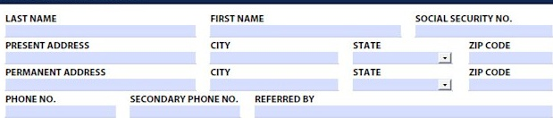
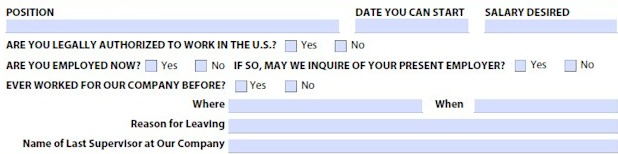

You will not be denied employment solely because of a conviction record, unless the offense is related to the job for which you have applied.
DATE YOU CAN START SALARY DESIRED
ARE YOU LEGALLY AUTHORIZED TO WORK IN THE U.S.? ☐ Ye ARE YOU EMPLOYED NOW? ☐ Yes EVER WORKED FOR OUR COMPANY BEFORE? ☐ Yes No

Name of Last Supervisor at Our Company
| NAME & LOCATION OF SCHOOL | YEARS ATTENDED | DID YOU GRADUATE | SUBJECTS STUDIED | |
| HIGH SCHOOL | ||||
| COLLEGE | ||||
| TRADE, BUSINESS, OR CORRESPONDENCE SCHOOL |
SUBJECT OF SPECIAL STUDY/RESEARCH WORK SPECIAL TRANING, CERTIFICATIONS, LICENSES SPECIAL SKILLS, FOREIGN LANGUAGE, ETC.
HAVE YOU EVER SERVED IN THE U.S. ARMED FORCES? ☐ Yes ☐ No